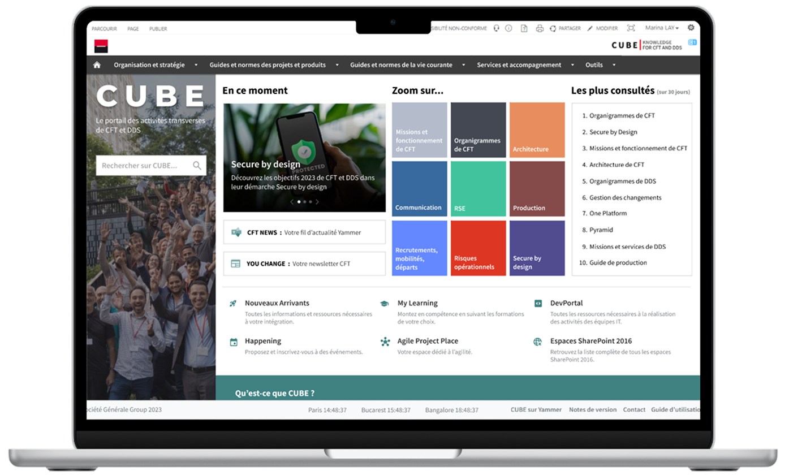
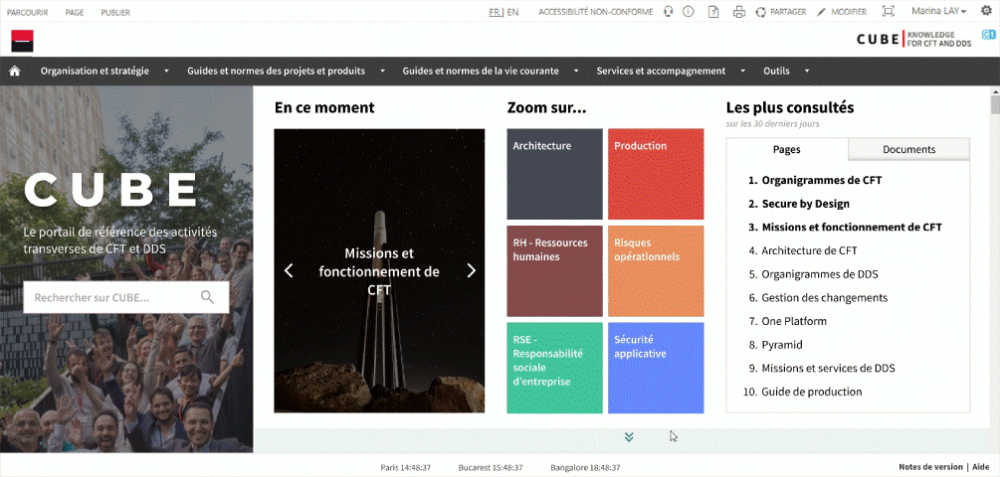
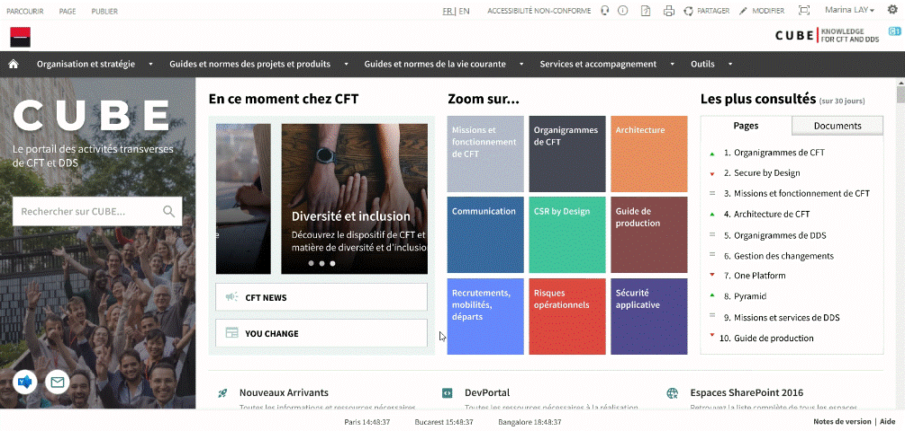
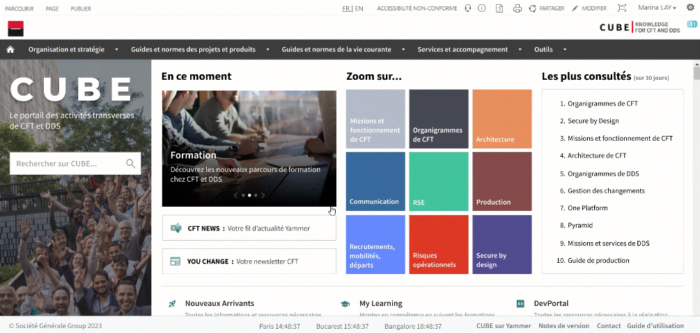
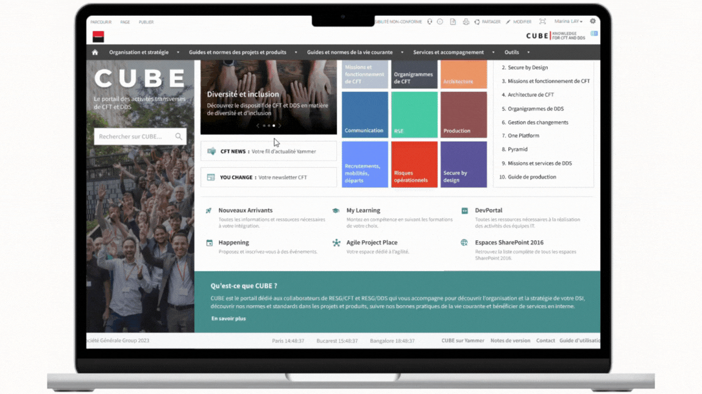

CUBE
Optimiser l'engagement et l'image de marque via une refonte centrée utilisateur.
Période : Juin - Juillet 2024
Rôle : UX/UI Designer (Recherche utilisateur, Wireframes, Prototypes, Tests utilisateurs)
Parties prenantes : Produit, Tech
CUBE est le portail de gestion des connaissances de la direction IT "Corporate Functions Technologies" (CFT). Malgré son rôle central, la page d'accueil était jugée "froide", "vide" et ne reflétait pas le dynamisme de la direction.
Objectif du chantier
Transformer CUBE en une véritable vitrine attractive et intuitive pour les collaborateurs.
Pour identifier les points de friction, j'ai mené des entretiens avec 44 utilisateurs cibles.
Problématiques identifiées :
- Identité floue : Difficulté à comprendre l'objectif du portail dès l'arrivée.
- Design obsolète : Interface "terne" ne respectant pas les standards actuels ni la charte Groupe.
- Défaut d'ergonomie : Mauvaise hiérarchisation de l'information et utilisation inefficace de l'espace blanc.
L'approche a consisté à aligner les besoins utilisateurs avec le Design System Groupe tout en créant une identité propre au produit.
UI & Branding
Création d'une identité visuelle distincte (couleur primaire #418080) intégrée dans l'écosystème Société Générale.
Processus itératif
Structure globale et mise en place des composants.
Retours obtenus lors des tests utilisateurs : Sections trop encombrantes et scroll excessif.

Affinage de la navigation et ajout d'un carrousel dynamique.
Retours obtenus lors des tests utilisateurs : Rythme trop rapide et icônes ambiguës.

Simplification des intitulés, ajout de descriptions au survol pour la clarté, et réorganisation du footer pour épurer la bannière.


La mise en production a radicalement transformé la perception du portail :
- 92% de satisfaction sur le design (jugé moderne et intuitif).
- 100% de pertinence perçue sur les contenus mis en avant.